02. Create Objects
Version: CE Express v7.2
- Objective This module explains and demonstrates how to create, edit, duplicate, and manage network objects in CE Express using object templates. By the end of this exercise, participants will be able to:
- Create and use object templates effectively
- Create sites and cells with correct RF parameters
- Duplicate and reposition network objects efficiently
- Modify object parameters using both forms and tables
- Apply meaningful network symbology for RF analysis
- Initial Data and Prerequisites The following prerequisites are assumed:
- A prepared workspace created in: 01. CE Express – Creating Workspace
- Available geodata (terrain, obstacles and clutter)
- User permissions to create and edit network objects
- Understanding the Network Objects Concept In CE Express, network objects represent the physical and logical elements of a radio network. They form the foundation for all RF planning, simulation, and optimization activities performed in the workspace. Network objects typically include:
- Sites – physical locations where radio equipment is installed
- Cells / Sectors – logical radio entities defining coverage and capacity
- Antennas – radiation characteristics, patterns, and beamforming behavior
- Links and relations – logical associations between network elements These objects are tightly coupled with:
-
Geodata (terrain, clutter, obstacles), which influences propagation behavior
-
Technology definitions (LTE, 5G NR, TDD/FDD)
- Templates, which standardize configuration and reduce engineering errors Why Templates Matter Object templates encapsulate best-practice RF configurations, such as:
- Standard power levels and bandwidths
- Technology-specific parameters (e.g. NR numerology, MIMO layers)
- Approved antennas and prediction models Using templates ensures:
- Consistency across large networks
- Faster rollout and scenario creation
- Reduced risk of misconfiguration during planning and optimization
3.1 Step 1 – Open the Workspace
- Open the CE Express application: https://cecom2.cellular-expert.com/ce_express/
- From the workspace list, select the workspace created in the previous exercise.
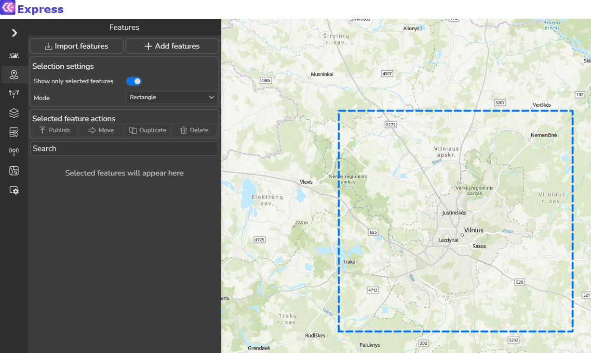
Best practice: Always confirm the active workspace before object creation to avoid placing
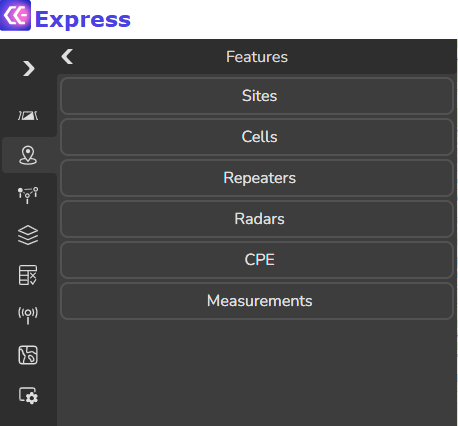
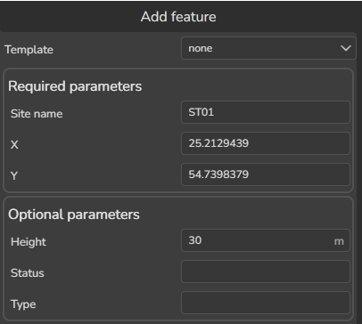
objects in the wrong project.3.2 Step 2 – Creating Network Objects
3.2.1 Creating a Site Object 1. Open the Features tool. 2. Click Add Feature and select Sites. Define the following parameters: - Site Name: ST01 - X (Longitude): 25.2129439 - Y (Latitude): 54.7398379 - Height (m): 30
- Click Accept to create the site. RF note: Site height represents the average antenna mounting height above ground and
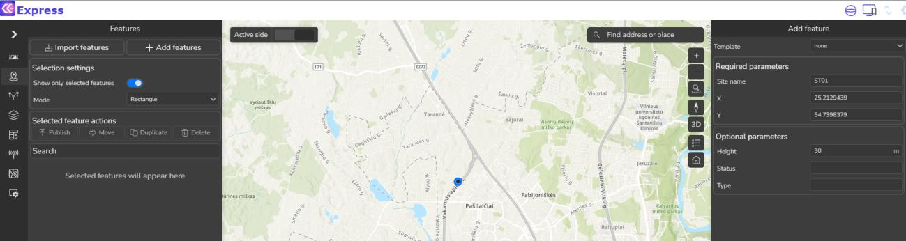
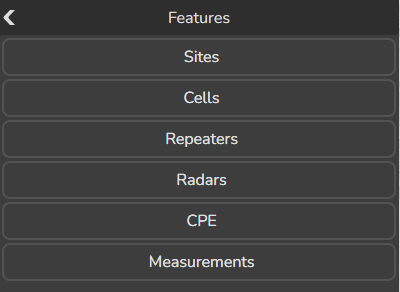
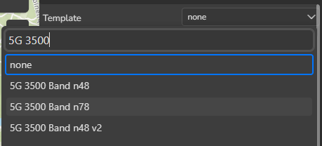
directly impacts coverage and LOS conditions. 3.2.2 Creating Cell Objects Using Templates 1. In the Features tool, click Add Feature again. 2. Select Cells. 3. In the template selection window, choose: 5G 3500 – Band n78Templates pre-fill technology-specific parameters, ensuring consistency and reducing configuration errors. 3.2.3 Creating a 3-Sector 5G Site Then create three new cells based on table below (once you enter all parameters for one cell object press Accept button, then change parameters for second cell and press Accept button, and do it for third cell). Parameter Value | Cell name | Cx01 | Cx02 | Cx03 | |---|---|---|---| | X | 25.2129439 | 25.2129439 | 25.2129439 | | Y | 54.7398379 | 54.7398379 | 54.7398379 | | Azimuth, deg | 0 | 120 | 240 | | Height, m | 30 | 30 | 30 | | Downtilt, deg | 1 | 1 | 1 | | El. Downtilt, deg | 0 | 0 | 0 | | Frequency, MHz | 3500 | 3500 | 3500 | | Power, dBm | 40 | 40 | 40 | | Misc Loss, dB | 0 | 0 | 0 | | Bandwidth, MHz | 100 | 100 | 100 | | Noise Figure, dB | 6 | 6 | 6 | | Downlink duplex factor | 0,6 | 0,6 | 0,6 | | Subcarrier spacing, kHz | 60 | 60 | 60 | | TX MIMO | 32 | 32 | 32 | | RX MIMO | 32 | 32 | 32 | | Active Antenna Effect | 6 | 6 | 6 | | Cell Load, % | 30 | 30 | 30 | | Technology | 5G | 5G | 5G | | Prediction model | CEC ITU-R: 3km radius | CEC ITU-R: 3km radius | CEC ITU-R: 3km radius | | Frequency group | 3500 | 3500 | 3500 |
Antenna S4-90M-R1- S4-90M-R1- S4-90M-R1-
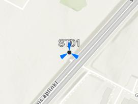
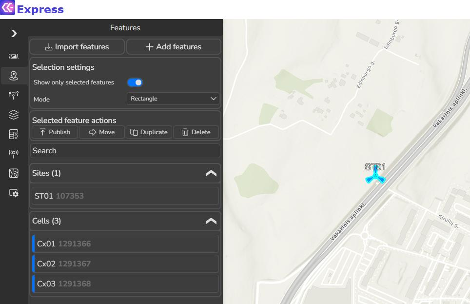
V2_BC-3300- V2_BC-3300-3600- V2_BC-3300- 3600- P0_02DT_3500 3600- P0_02DT_3500 P0_02DT_3500 Carriers [] [] [] SiteID Duplex Mode TDD TDD TDD 4. After creating all three cells, click Cancel to close the Add Feature tool.3.3 Step 3 – Selecting and Reviewing Objects
- Select the newly created site and cells on the map.
- Verify their placement and orientation.
3.4 Step 4 – Duplicating Network Objects
Duplicating objects is commonly used for: - Multi-site rollout scenarios - Rapid what-if analysis - Dense urban planning Duplicate Procedure 1. Keep all created objects selected. 2. In the Features tool, click Duplicate. 3. In the Duplicate dialog, define: - Workspace: current workspace - X: 25.2221667 - Y: 54.7357602 4. Click Accept. All selected objects are duplicated at the new location.
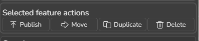
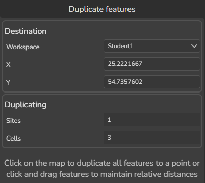
3.5 Step 5 – Moving Individual Objects
Objects can be repositioned individually or as a group. In this exercise, cells will be placed at different corners of a building.
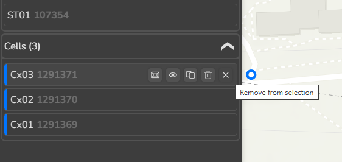
3.5.1 Moving a Single Cell 1. Select duplicated objects. 2. Remove all but Cx01 from the selection. 3. Click the Move tool.Define new coordinates: - X: 25.2222847 - Y: 54.7358624 4. Click Accept. Repeat the process for: - Cx02 → X: 25.2222847, Y: 54.7353823 - Cx03 → X: 25.2218663, Y: 54.7357199
3.6 Step 6 – Modifying Object Parameters
After objects are created and positioned, the next important task is updating and refining their
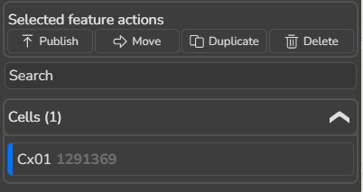
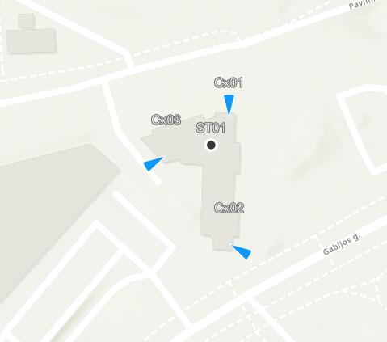
parameters. Correct parameters ensure that objects are clearly identified, consistently configured, and ready for further analysis, visualization, or reporting across different user roles.CE Express provides two complementary ways to modify object parameters:
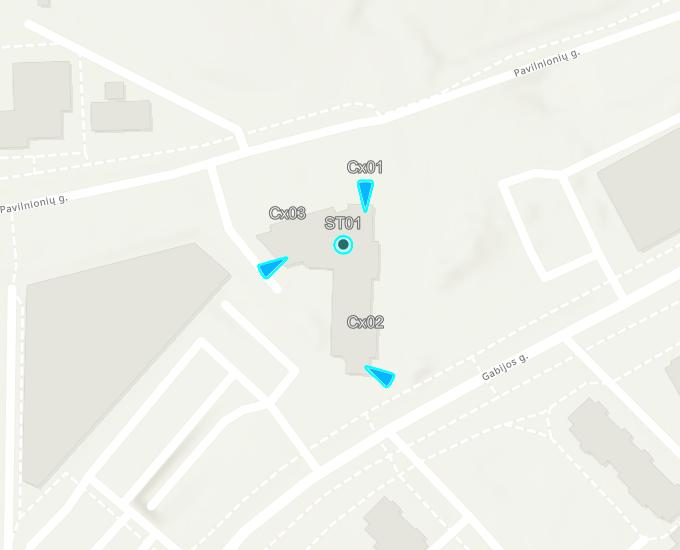
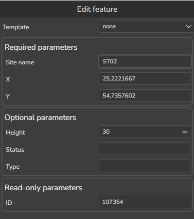
- Object-level editing – detailed changes for individual objects - Table-based editing – fast and efficient updates for multiple objects Both methods are commonly used together in real projects. 3.6.1 Editing via Object Properties 1. Select newly duplicated/moved objects on the map. 2. Click on the duplicated ST01 site in Features tool. 3. In the Features tool, change the site name to: ST02 4. Click Accept.Clear and unique object names help all users quickly understand the network structure and
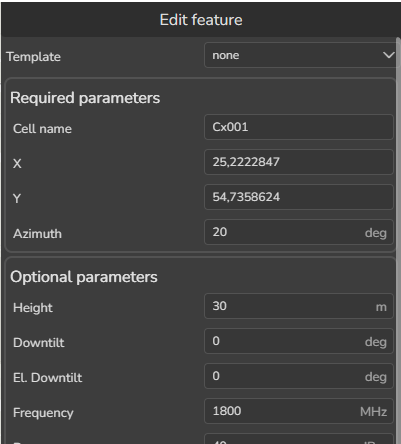
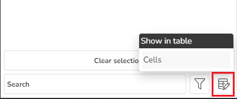
avoid confusion. 4. Click on the Cx01 cell in Features tool and modify the following parameters: - Name: Cv001 - Azimuth: 20 - Frequency: 1800 5. Click Accept. Changing these parameters updates how the object is represented and interpreted in the project. 3.6.2 Editing via Table View Table view is especially useful when working with multiple objects or large projects. 1. In the Features tool, click Show in Table. 2. Select Cells.The table and the map are synchronized: - Selecting an object in the table highlights it on the map - Selecting an object on the map highlights it in the table Update parameters as follows: - Cx02: o Cell Name → Cv002 o Azimuth → 160 - Cx03: o Cell Name → Cv003 o Azimuth → 250 This approach makes it easy to review and adjust values while maintaining full spatial
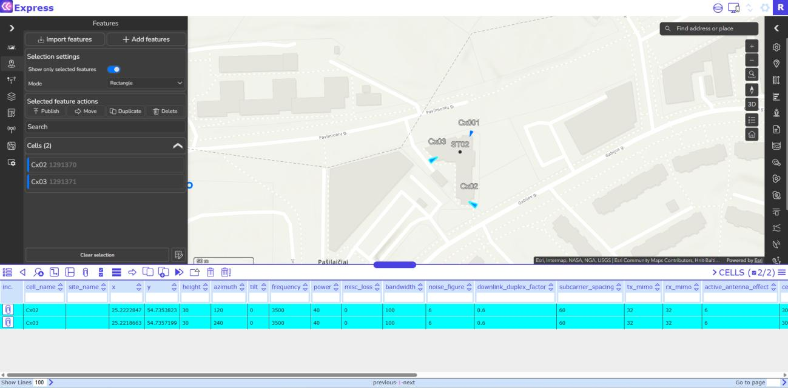
awareness. 3.6.3 Bulk Editing Multiple Objects 1. Select multiple cells in the table (left click on them).- Left click on the Frequency field.
- From the context menu, choose Set selected.
- Enter the new value: 1800 MHz.
- Click Change.
- Select Cells again and do the same for frequency_group field. Define value 1800.
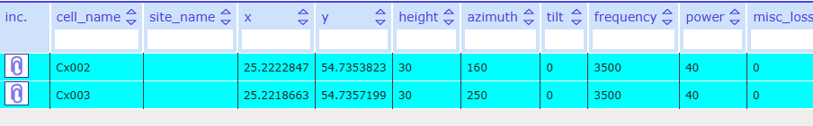
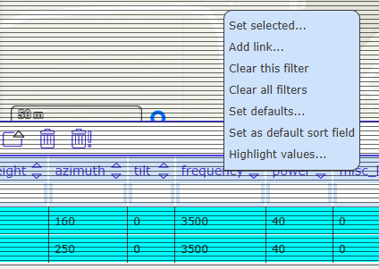
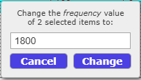
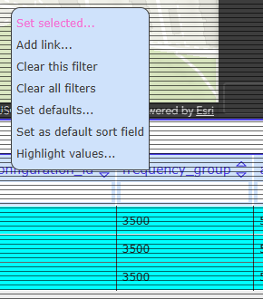
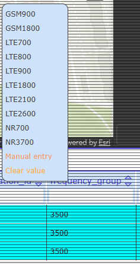
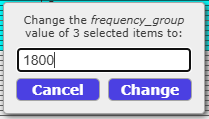
3.7 Step 7 – Managing Network Symbology
Network symbology defines how objects are visually displayed on the map. While symbology does not change object data, it plays a key role in making complex projects easier to understand for different audiences, including technical teams, decision-makers, and non-
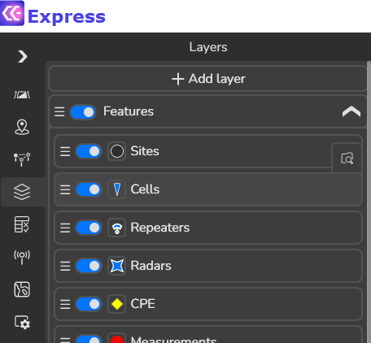
technical users.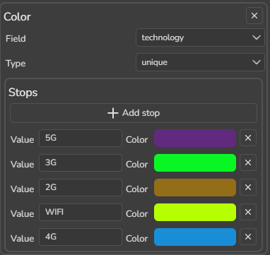
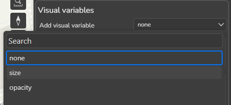
Well-designed symbology helps to: - Distinguish between technologies and frequency layers - Improve map readability in dense areas - Support presentations, reviews, and decision-making 3.7.1 Configuring Cell Symbology 1. Open the Layers tool. 2. Click on the Cells icon to open the Cell Symbolization panel. It will open a Cells Symbolization tool that customers can define on how network objects should be visualized. Define: - Draw order - Order by: frequency - Order: descending - Visual variables: Color- Technology
- Stops: define as in the picture below
- In Visual variables add a new parameter: Size
- Field: frequency
- Stops: define as in the picture below
Press Accept button. Cells symbology will be updated
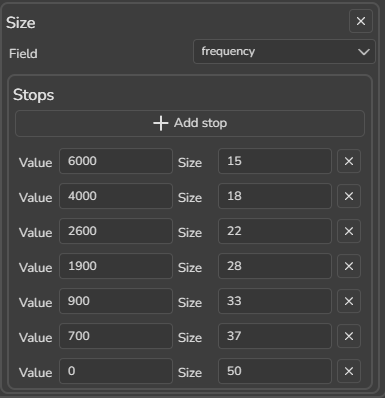
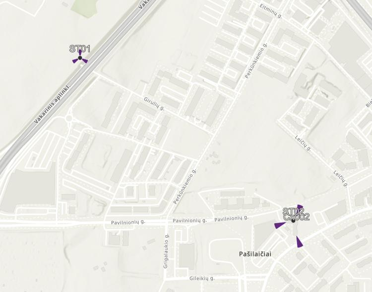